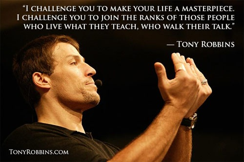
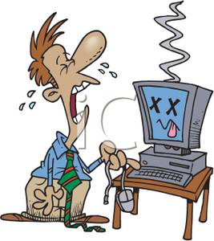

Tony Robbins - Peak Performance Strategist

Why is it useful?
better decisions = better life
Two master lessons of life:
Science of achievement
Art of fulfilment.
Have you failed to achieve something? Why?
TIME
MONEY
TECHNOLOGY
CONTACTS
EXPERIENCE
MANAGEMENT
What do all these reasons have in common?
They are claims for missing resources
Based on the perception of lack of resources
Determining factor - Resourcefulness
CREATIVITY
DETERMINATION
LOVE / CARING
CURIOSITY
PASSION
BOLDNESS
What determines resources?
- 1) What am I going to FOCUS on?
- 2) What does it MEAN?
- 3) What am I going to DO?
Focus => feelings

Past or Present or Future?
Self or Others?
Problem or Solution?
Bug or feature?
Is it the end or beginning?
Are you being punished or rewarded?
Blocker or opportunity?
Good luck or bad luck?
Give up or move forward?
Work on my own or ask for help?
Change approach?
What shapes you?
1) State
2) Model of the world
Pattern of physiology
It is a foundation of all effective change
Pattern of focus = feeling
Pattern of language
O jejku! | O kur*a!
Sì. | Ja.
Our model of the world
TARGET
1. Certainty
assurance you can avoid pain and gain pleasure
2. Uncertainty/Variety
the need for the unknown, change, new stimuli
3. Significance
feeling unique, important, special or needed
"I have a biggest problem"
4. Love/connection
a strong feeling of closeness or union with someone or something
5. Growth
an expansion of capacity, capability or understanding
6. Contribution
a sense of service and focus on helping, giving to and supporting others
Belief System (BS)
I'm too old for this
People want to cheat me
Life is beautiful
I'm too scared
The past does not equal future
I find great joy in little things
I create my own reality and I'm responsible for what I create
There is always a way if I'm commited
They could destroy me
It's hopeless
They have to fix it
Bad weather makes me sick
People are helpful
Strangers care!!
FUEL = Daily emotions
Napisz na kartce jedną decyzję, którą chcesz podjąć.
Podejmowanie decyzji - w jakim stanie powinieneś być?
Jeśli jesteś w stanie A - to jaką podejmiesz decyzję?
Jeśli jesteś w stanie znużenia?
Jeśli jesteś w stanie zaangażowania?
Porozmawiaj z drugą osobą na temat tego co się dowiedziałeś o tej decyzji i perspektywie.